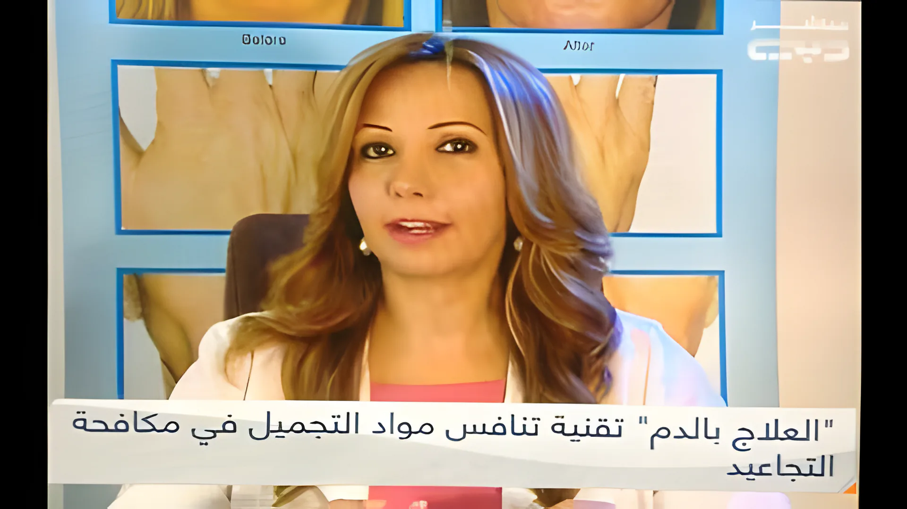
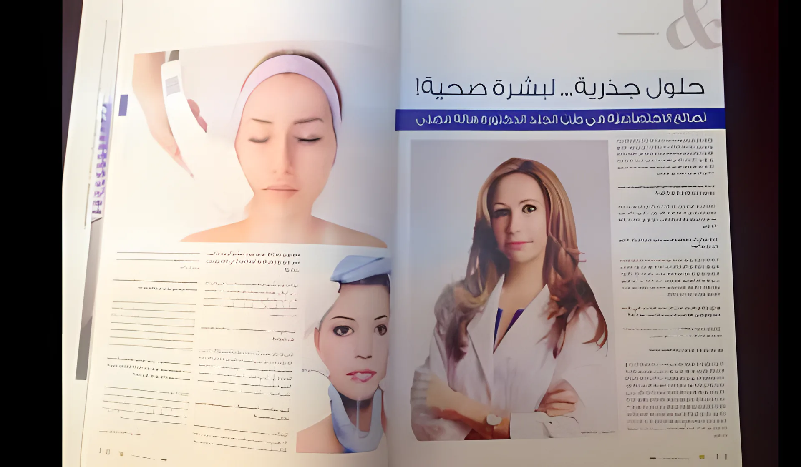
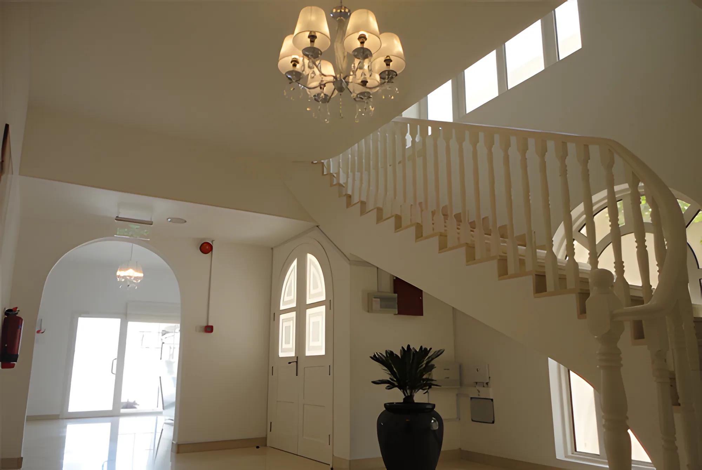

Dr Hala Fadli
MBChB, DDS, MSc, PhD in Dermatology (UK). Cosmetic dermatologist, Dubai.
Dr Hala Fadli at the clinic.
Trained in Wales
Dr Fadli specialised in dermatology in the United Kingdom. She earned her Diploma in Dermatology in 1996, a Masters in Dermatological Sciences in 1997 and her PhD in Dermatology in 2003, all from the University of Wales College of Medicine in Cardiff.
Her clinical experience was at the University Hospital of Wales in Cardiff and the Royal Gwent Hospital in South Wales. She then specialised in cosmetic dermatology (Botox, dermal fillers, chemical peels, laser hair removal and other procedures), training in private practices in Cardiff, on Harley Street in London, and in Berlin.
Her practice in Dubai covers diseases of the skin, hair and nails, with an emphasis on facial cosmetic treatment and the complexion. She comes from a medical family: her father is a psychiatrist and her mother a gynaecologist, both with clinics in Dubai, and her brother is also a psychiatrist.
- 1996Diploma in Dermatology, University of Wales College of Medicine, Cardiff
- 1997Masters in Dermatological Sciences
- 2003PhD in Dermatology
- 2013EADV Congress, Istanbul
- 2014Dubai Derma congress
- Neutrogena advisory board (Johnson & Johnson)
On television and in print
Dr Fadli has been a regular guest on Dubai TV's Friday programme ظهيرة الجمعة, talking about acne and acne scars, PRP, moles, skin and stress, facial redness, nail conditions, the dermaroller, collagen, Cryolipolysis and the non-surgical nose job. She has spoken live on Sky News about stress and psoriasis.
In print, she has written on healthy skin for A&E magazine and on the non-surgical nose job for Zahrat Al Khaleej.


The clinic
A villa on Al Wasl Road
The clinic is in a white villa at 929 Al Wasl Road, Umm Suqeim 2, opposite Choitram supermarket. It is licensed by the Ministry of Health, licence no. 881/2/4/30/4/10.

See Dr Fadli
Call to book a consultation, or email manager@halafadli.com.